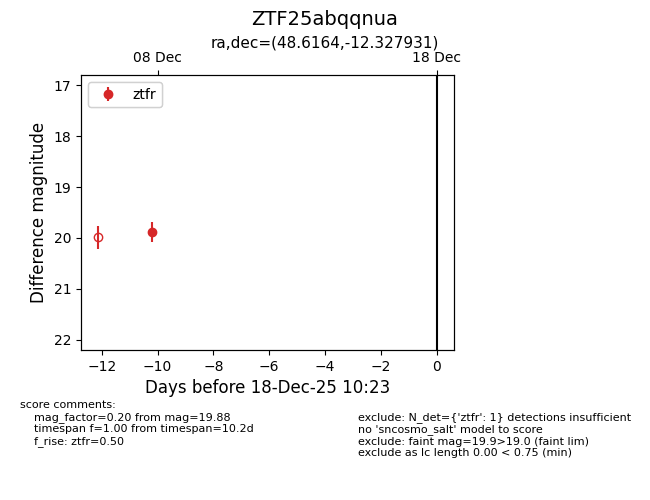
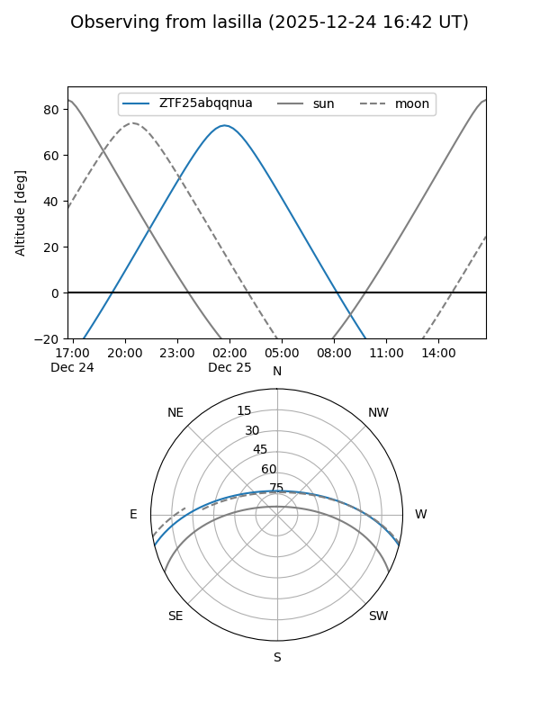
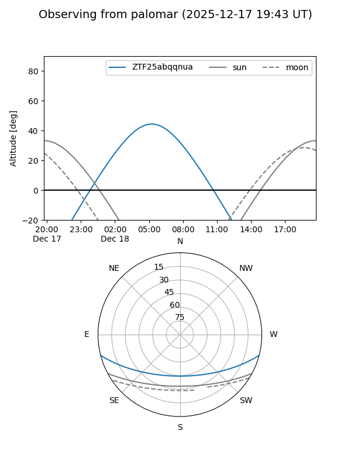

ZTF25abqqnua
Target ZTF25abqqnua at 2025-12-31 16:59
Aliases and brokers:
FINK:
Lasair:
ALeRCE:
alt names
ZTF25abqqnua (ztf,fink_ztf)
Coordinates:
equatorial (ra, dec) = 48.6164,-12.32793
equatorial (HMS+DMS) = 03:14:27.95,-12:19:40.55
galactic (l, b) = (196.2125,-53.41082)
Flags:
Photometry:
last ztfr=20.16
2 ztfr detections
Lightcurve

Visibility


Additional plots